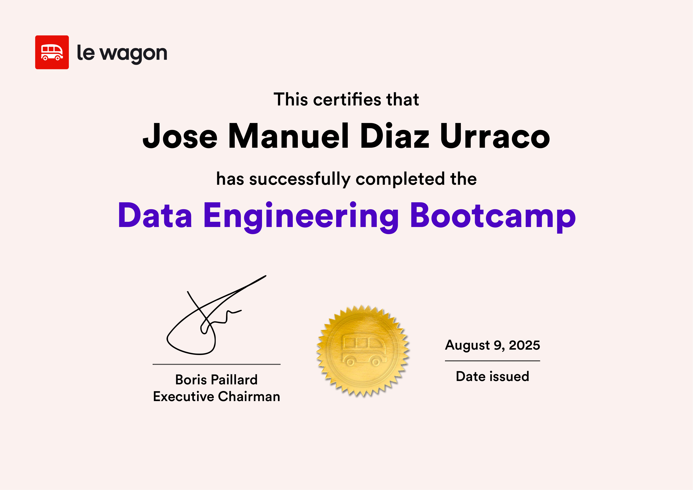
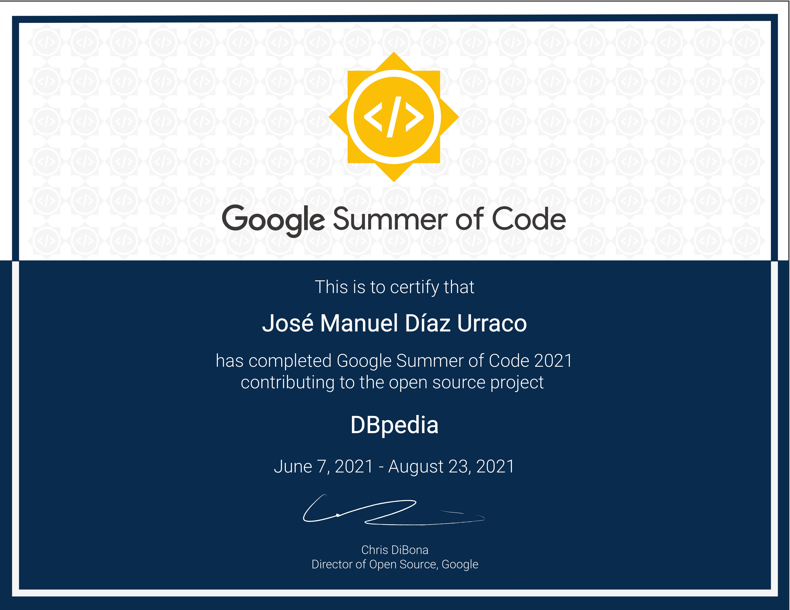
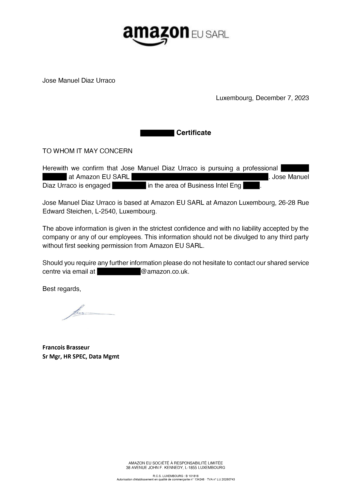
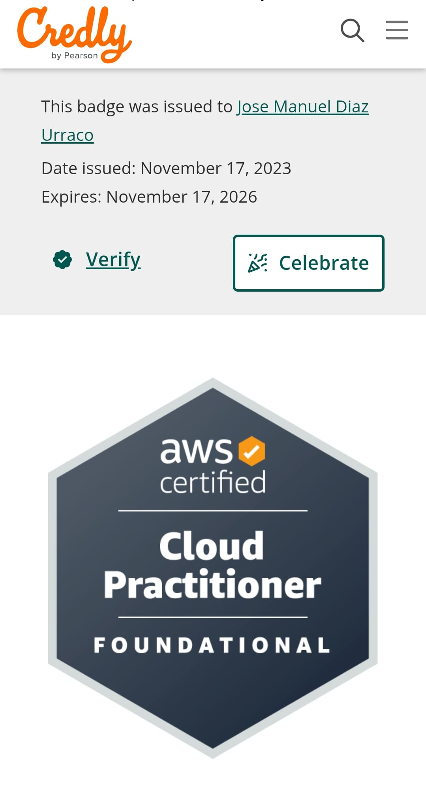

About Me
- Data Engineer with international experience in startups, big tech, and consultancies (2021–2024)
- Since February 2025: remote freelance work for HealthTech and EdTech clients based in several countries
- Passionate about continuous learning: Data Engineering bootcamp, MSc in Data Science, AWS Certified
- Quick to adapt to different teams, environments, and tech stacks
- Clear communicator with both technical and non-technical stakeholders in multicultural settings
- I focus on collaborations where I can create real value and help projects succeed
Testimonials
⭐⭐⭐⭐⭐
“Jose executed the data migration from Gainsight CRM to the data warehouse with precision and zero downtime — coordinating across teams and time zones end-to-end.”

⭐⭐⭐⭐⭐
“During Google Summer of Code 2021, Jose was proactive, responsible, and solution-oriented while leading the DBpedia Spotlight dashboard.”
Credentials & Certificates

Data Engineering Bootcamp at Le Wagon

Google Summer of Code
Learning beyond the classroom and applying hands-on coding in real data projects.

Amazon Letter

AWS Certified Cloud Practitioner
My role and experience at Amazon Luxembourg.
 Bachelor Diploma
Bachelor Diploma
 Master Diploma
Master Diploma
My official university education.